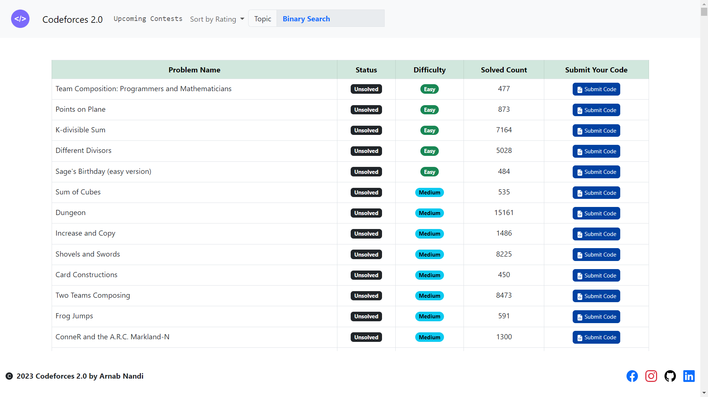
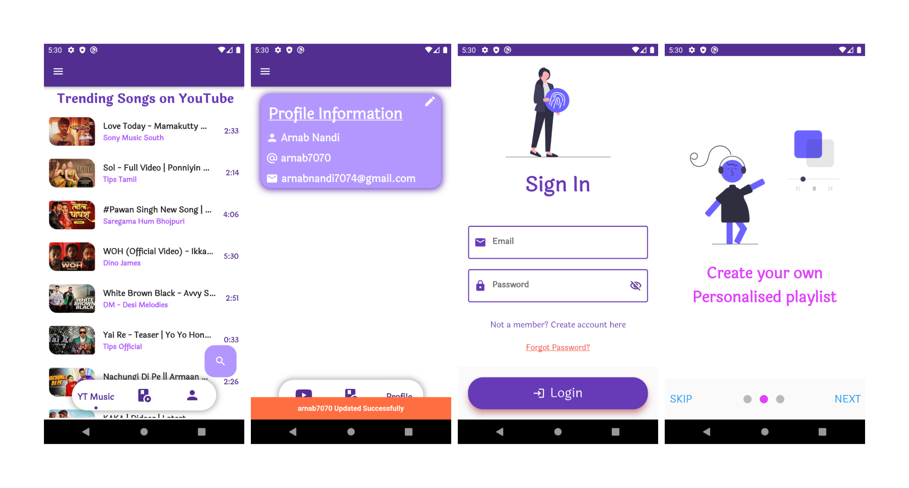
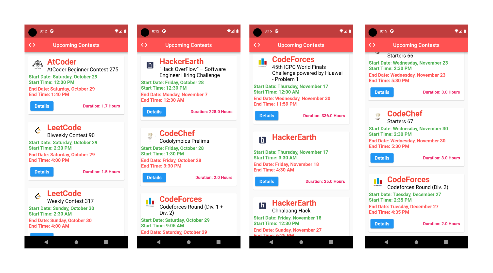
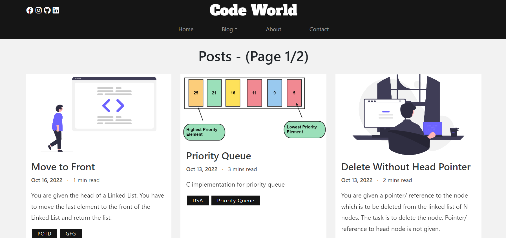
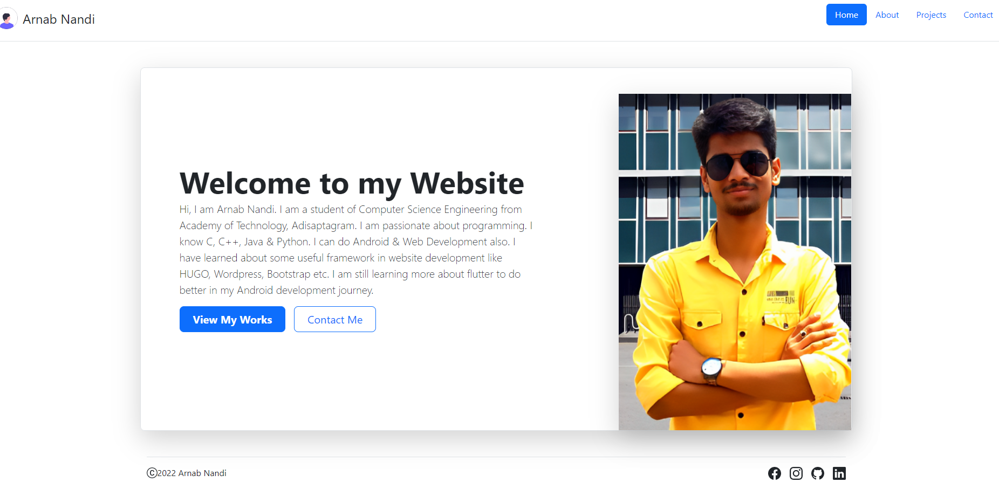
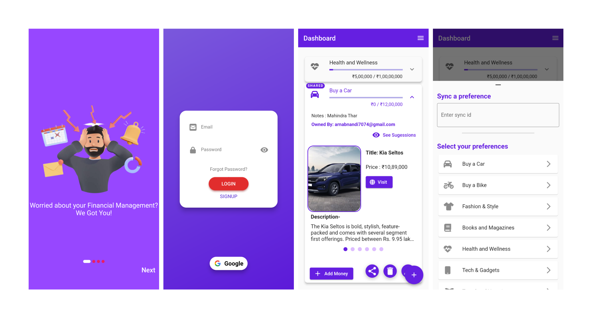
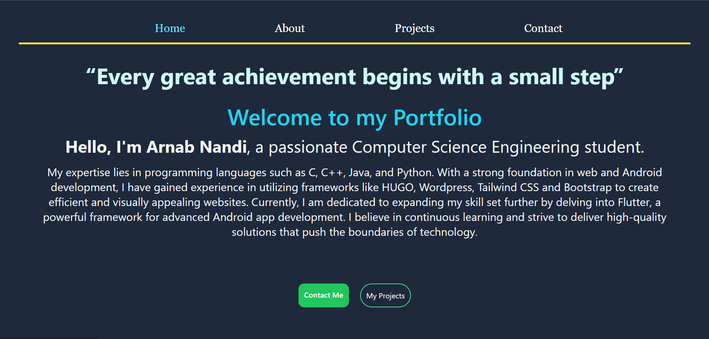

“Every great achievement begins with a small step”
Welcome to my Portfolio
Hello, I'm Arnab Nandi, a passionate Computer Science Engineering student.
My expertise lies in programming languages such as C, C++, Java, and Python. With a strong foundation in web and Android development, I have gained experience in utilizing frameworks like HUGO, Wordpress, Tailwind CSS and Bootstrap to create efficient and visually appealing websites. Currently, I am dedicated to expanding my skill set further by delving into Flutter, a powerful framework for advanced Android app development. I believe in continuous learning and strive to deliver high-quality solutions that push the boundaries of technology.
About Me
I am a passionate technophile, constantly driven to expand my knowledge in various domains of technology. Ever since my childhood, I aspired to become an engineer, but as I grew older, I discovered a profound interest in the software field.
To pursue my passion, I enrolled in BTech CSE, building upon the foundation of my exceptional academic performance. During my 12th grade, I achieved an impressive 96% marks from Burdwan Municipal High School, which propelled me towards my current educational journey at the esteemed Academy of Technology (AOT), where I am currently a 3rd year student. Maintaining a stellar track record, my current YGPA stands at an impressive 9.75.
As part of my growth, I have successfully developed a range of captivating projects, which can be explored in detail under the Projects tab. I genuinely hope that these projects resonate with you and showcase my dedication and skill in this field. Looking ahead, I am excited to continue my quest for knowledge by delving into new technologies, thereby broadening my expertise even further.
Projects
Codeforces 2.0Completed
 Codeforces 2.0 is an advanced and user-friendly tool that automates the retrieval of relevant information for Codeforces users. With a single click, it fetches comprehensive user details and presents a well-organized list of solved questions, along with the ability to sort them by topic. The tool also conveniently displays upcoming contests. Accessible through a repository, the source code provides further insights into its implementation. Codeforces 2.0 streamlines the process of accessing user information, presenting solved questions intuitively, and facilitating engagement with upcoming contests.Music Player AppCompleted
 This application is a sophisticated music player app developed using the Flutter framework. It offers a comprehensive set of features for an enhanced music listening experience. The entire source code for this app can be accessed in my repository, providing full visibility into its implementation. Notably, the app seamlessly integrates with Firebase as a backend solution. One of its key highlights is the provision of ad-free music streaming, ensuring uninterrupted enjoyment for users. In addition to its robust functionality, this music player boasts a repertoire of exceptional gesture features. These innovative gestures will elevate the user experience.Contest Calendar AppCompleted
 This project marks a significant milestone as my inaugural endeavor incorporating API integration. By leveraging my expertise in API utilization, I have successfully addressed a practical challenge, enabling users to effortlessly access information about ongoing contests without the need to manually browse websites. The app serves as a centralized platform where users can conveniently view upcoming contests at their convenience. To experience the app firsthand and gain insights into its implementation, please visit my repository to download the application and explore the comprehensive source code.MAKAUT YGPA CalculatorCompleted
I have developed a compact yet engaging project, a YGPA Calculator tool, designed to provide users with a straightforward means of calculating their YGPA (Yearly Grade Point Average). This tool offers a user-friendly interface where individuals can input their marks details, benefiting from the implemented validation features to ensure accurate results. Built entirely using HTML, CSS, and JavaScript, this project showcases a harmonious blend of these technologies. To experience the tool and understand the work-function firsthand, I invite you to kindly click the button below and explore its impressive functionality.Code World - (Blog Website)Regularly Updating
 This captivating project showcases my adeptness with Hugo, an esteemed open-source static site generator widely recognized for its excellence. Motivated by my desire to create a coding blog website, I embarked on this venture to deepen my understanding of the framework. Throughout the project, I gained invaluable knowledge encompassing domain names, hosting, and other aspects vital to publishing a website on the internet. Leveraging the simplicity of markdown format, blogs seamlessly come to life as Hugo automates the rendering process, effortlessly transforming them into polished HTML content.Portfolio WebsiteCompleted
 With an insatiable appetite for acquiring knowledge about emerging frameworks and technologies, I have diligently immersed myself in the study of Bootstrap. Renowned for its user-friendly nature and its ability to facilitate the creation of visually stunning websites with exceptional user interfaces, Bootstrap has become an integral part of my repertoire. The website you are currently exploring is a testament to my comprehensive understanding and proficiency in utilizing Bootstrap. To gain deeper insights into the implementation and structure of this project, kindly click the button below to access the source code.Dream TrackerCompleted
 Welcome to our cutting-edge Personal Life Manager App, a powerful solution designed to empower your financial journey and enable you to seize control of your money, all while unlocking the full potential of your dreams. Meticulously crafted using Flutter, a versatile and robust framework, our app seamlessly integrates Firebase Authentication and Firestore Database. This combination ensures a secure and streamlined user experience, while leveraging the power of cloud storage for efficient data management. To enhance user engagement, our app incorporates stunning animations that captivate and delight. Experience the pinnacle of financial management with our comprehensive Personal Life Manager App today.Portfolio Website using TailwindCompleted
 With an insatiable appetite for acquiring knowledge about emerging frameworks and technologies, I have diligently immersed myself in the study of Bootstrap. Renowned for its user-friendly nature and its ability to facilitate the creation of visually stunning websites with exceptional user interfaces, Bootstrap has become an integral part of my repertoire. The website you are currently exploring is a testament to my comprehensive understanding and proficiency in utilizing Bootstrap. To gain deeper insights into the implementation and structure of this project, kindly click the button below to access the source code.Contact Me
Are you in need of any assistance or clarification? Please don't hesitate to reach out to me if you have any inquiries or require further support. I am at your disposal for any questions or concerns you may have. I appreciate your visit to my website, and I look forward to providing you with the necessary information.